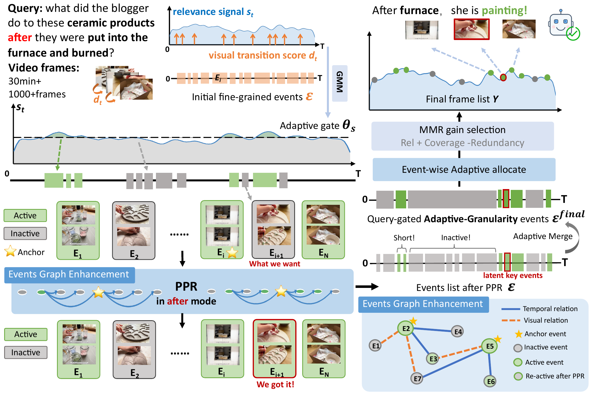

Training-free, plug-and-play keyframe selection that helps large vision–language models see the right frames in long videos — without any extra LVLM calls.
1Tsinghua Shenzhen International Graduate School, Tsinghua University 2College of Computer Science and Software Engineering, Shenzhen University
✉ Corresponding author
Informative keyframe selection is critical for applying large vision–language models (LVLMs) to long-form video understanding under limited frame budgets. However, existing methods heavily rely on query–frame similarity, which can yield coarse event boundaries and miss latent contextual events that are answer-relevant but not explicitly mentioned in the query.
To address this issue, we propose AGE-Sampler, a training-free Adaptive-granularity Graph-enhanced Event sampling framework for long-video understanding. AGE-Sampler jointly exploits low-level visual transition cues and query-relevance signals to construct query-adaptive events, preserving fine-grained structures in relevant regions while merging low-relevance regions into compact intervals. To recover answer-bearing contextual evidence, we further develop a fine-grained event graph and propagate importance from high-confidence query-relevant anchors via Personalized PageRank, followed by event-level budget allocation and representative keyframe selection.
Extensive experiments with different LVLM backbones show that AGE-Sampler consistently improves long-video understanding, achieving average absolute gains of +6.2% on LongVideoBench, +8.8% on MLVU, and +3.8% on Video-MME, while remaining lightweight and plug-and-play.

Fuse low-level visual transitions with query-relevance scores to build fine-grained event candidates — keeping detail where the query needs it, collapsing background elsewhere.
Build a temporal + visual event graph and propagate importance from high-confidence anchors via Personalized PageRank, resurfacing latent contextual events before merging.
Merge low-relevance regions, allocate the frame budget across the refined event structure, and select representative keyframes within each event using a localized MMR criterion.
AGE-Sampler consistently improves LVLM accuracy across four backbones (LLaVA-OneVision-7B, Qwen2.5-VL-7B, MiniCPM-V2.6, InternVL3-8B) and three long-video QA benchmarks, while adding only one LVLM call per question and negligible extra GPU memory.
| Model | Method | Frames | LongVideoBench | MLVU | Video-MME | ||||||
|---|---|---|---|---|---|---|---|---|---|---|---|
| Base | +Method | Δ | Base | +Method | Δ | Base | +Method | Δ | |||
| LLaVA-OV (7B) | BOLT* | 32 | 56.4 | 59.6 | +3.2 | 63.2 | 66.8 | +3.6 | 58.5 | 59.9 | +1.4 |
| AKS* | 32 | 54.8 | 59.3 | +4.5 | – | – | – | 56.5 | 58.4 | +1.9 | |
| A.I.R.*§ | 32 | 58.5 | 60.7 | +2.2 | 62.4 | 69.3 | +6.9 | 58.3 | 61.4 | +3.1 | |
| MDP³ | 32 | 56.3 | 59.5 | +3.2 | 62.1 | 68.2 | +6.1 | 58.0 | 59.9 | +1.9 | |
| Ours | 32 | 56.3 | 61.8 | +5.5 | 62.1 | 68.9 | +6.8 | 58.0 | 61.7 | +3.7 | |
| Qwen2.5-VL (7B) | AKS* | 32 | 58.9 | 63.2 | +4.3 | 59.7 | 67.2 | +7.5 | 61.2 | 64.0 | +2.8 |
| A.I.R.*§ | 32 | 58.1 | 61.4 | +3.3 | 59.3 | 67.5 | +8.2 | 60.8 | 65.0 | +4.2 | |
| MDP³ | 32 | 58.5 | 59.5 | +1.0 | 59.4 | 66.1 | +6.7 | 61.1 | 63.2 | +2.1 | |
| WFS | 32 | 58.5 | 64.4 | +5.9 | 59.4 | 69.5 | +10.1 | 61.1 | 64.2 | +3.1 | |
| Ours | 32 | 58.5 | 64.9 | +6.4 | 59.4 | 69.9 | +10.5 | 61.1 | 64.5 | +3.4 | |
| MiniCPM-V2.6 (7B) | MDP³ | 8 | 51.6 | 57.3 | +5.7 | 51.6 | 62.2 | +10.6 | 52.8 | 58.0 | +5.2 |
| WFS | 8 | 51.6 | 58.6 | +7.0 | 51.6 | 62.6 | +11.0 | 52.8 | 57.9 | +5.1 | |
| Ours | 8 | 51.6 | 59.0 | +7.4 | 51.6 | 62.5 | +10.9 | 52.8 | 58.5 | +5.7 | |
| InternVL3 (8B) | AKS* | 32 | 58.5 | 61.5 | +3.0 | 68.4 | 74.2 | +5.8 | 65.6 | 66.3 | +0.7 |
| A.I.R.*§ | 32 | 58.3 | 62.8 | +4.5 | 68.4 | 74.5 | +6.1 | 65.6 | 68.2 | +2.6 | |
| MDP³ | 32 | 58.3 | 60.4 | +2.1 | 68.3 | 73.6 | +5.3 | 65.1 | 66.8 | +1.7 | |
| WFS | 32 | 58.3 | 62.5 | +4.2 | 68.3 | 74.3 | +6.0 | 65.1 | 67.1 | +2.0 | |
| Ours | 32 | 58.3 | 63.9 | +5.6 | 68.3 | 75.1 | +6.8 | 65.1 | 67.6 | +2.5 | |
“Base” denotes uniform frame sampling; “+Method” applies the corresponding keyframe selector; Δ is the absolute gain over the row’s base. Rows without a marker are reproduced under a single shared protocol; * rows are quoted from the original papers with their own base (so their Δ is indicative, not controlled). § marks an LVLM-dependent iterative method. Bold = best, underline = second-best per model–benchmark group.
@inproceedings{wang2026agesampler,
title = {AGE-Sampler: Adaptive-granularity Graph-enhanced Event
Sampling for Long-Video Understanding},
author = {Wang, Yanzi and Dai, Tao and Zha, Yaohua and Xia, Shu-Tao},
booktitle = {Proceedings of the 2026 Conference on Empirical Methods
in Natural Language Processing (EMNLP)},
year = {2026}
}